ggwas: Modern GWAS Visualizations
Bartosz Czech
bartosz.w.czech@gmail.com2026-07-01
Source:vignettes/ggwas.Rmd
ggwas.RmdAbstract
The ggwas package provides a comprehensive, ggplot2-based toolkit for visualizing genome-wide association study results. It covers the full spectrum of GWAS plots — from standard Manhattan and QQ plots to novel visualizations like genome-wide heatmaps, enrichment overlays, and multi-trait comparisons. All functions return ggplot objects, making them fully composable with the tidyverse graphics ecosystem. This vignette demonstrates the main functionality with worked examples.
Introduction
Genome-wide association studies (GWAS) generate large amounts of
summary statistics that require effective visualization for
interpretation and publication. The standard tools in R
(qqman, CMplot) rely on base R graphics and
offer limited customization. Modern genomics workflows benefit from a
plotting system that integrates with ggplot2 — enabling layered
customization, journal-specific theming, and seamless composition of
multi-panel figures.
ggwas was designed with three goals:
- Comprehensive coverage — 17 plot types in one package, including novel visualizations not available elsewhere.
- Publication-ready defaults — sensible colors, proper axis formatting, and built-in journal themes so plots look good without tweaking.
- Performance at scale — smart downsampling handles 10M+ variant datasets without manual intervention.
The package reads output from PLINK, REGENIE, GCTA, GEMMA, and any
generic tab-separated file. All plot functions return standard ggplot
objects, so you can add layers, override themes, or combine panels with
patchwork exactly as you would with any other ggplot.
Getting started
Installation
# From GitHub
pak::pak("bczech/ggwas")
# Once available on Bioconductor:
# BiocManager::install("ggwas")Reading data
The fastest way to load GWAS results is
read_gwas_table(), which auto-detects common column naming
conventions (CHR/CHROM/#CHROM, BP/POS/GENPOS, P/PVALUE/LOG10P,
etc.):
library(ggwas)
#> ggwas v0.99.2
library(ggplot2)
data(example_gwas)
example_gwas
#> A gwas_data object: 8,000 variants across 22 chromosomes
#> Min p-value: 1.19e-14
#> Lambda GC: 3.996
#> Columns: CHR, BP, SNP, P, BETA, SE, A1, A2, AFThe result is a gwas_data object — a data.frame with
validated columns and a custom print method showing key QC metrics at a
glance.
For specific tools, dedicated readers handle format quirks automatically:
gwas <- read_gwas_table("results.txt") # auto-detect
gwas <- read_plink_assoc("results.assoc") # PLINK
gwas <- read_plink_linear("results.assoc.linear")
gwas <- read_regenie("results.regenie") # REGENIE (handles LOG10P)
gwas <- read_gcta_mlma("results.mlma") # GCTA
gwas <- read_gemma("results.assoc.txt") # GEMMAYou can also pass any data.frame directly — just specify
non-standard column names:
manhattan_plot(my_df, chr = "chrom", bp = "position", p = "pval")Core plots
Manhattan plot
The Manhattan plot is the workhorse of GWAS visualization — each point is a tested variant, plotted by genomic position (x) against its association strength as -log10(p-value) (y). Chromosomes alternate in color for visual separation.
How to interpret: Look for “towers” of points rising above the genome-wide significance line (red dashed, p = 5×10⁻⁸). Each tower is a locus with evidence of true association. Isolated points above the line are worth investigating but may be artifacts. A broad signal spanning multiple chromosomes equally (rather than discrete peaks) can indicate unresolved population stratification — check the QQ plot in that case.
manhattan_plot(example_gwas)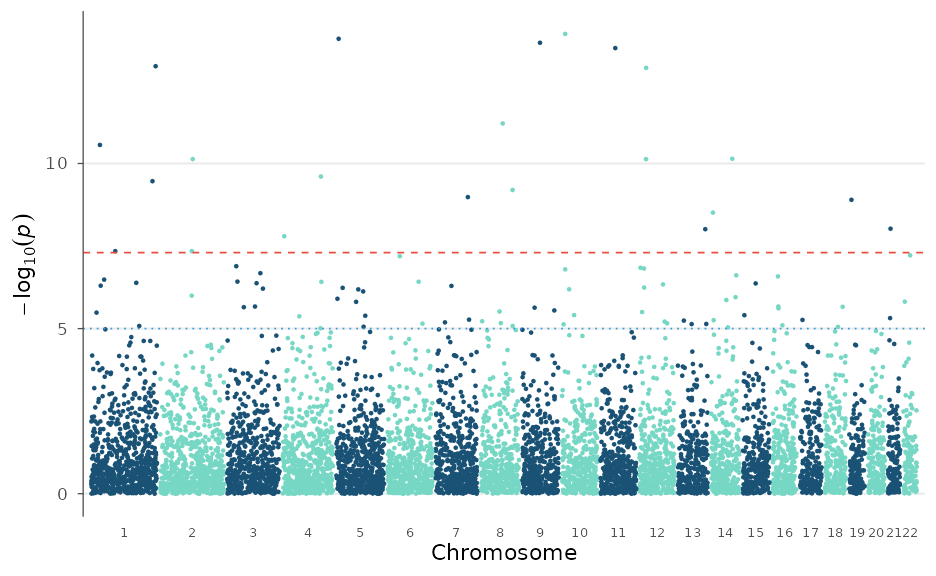
Label the strongest signals and switch to a different palette:
manhattan_plot(
example_gwas,
label_top_n = 5,
colors = gwas_palette("vibrant")
)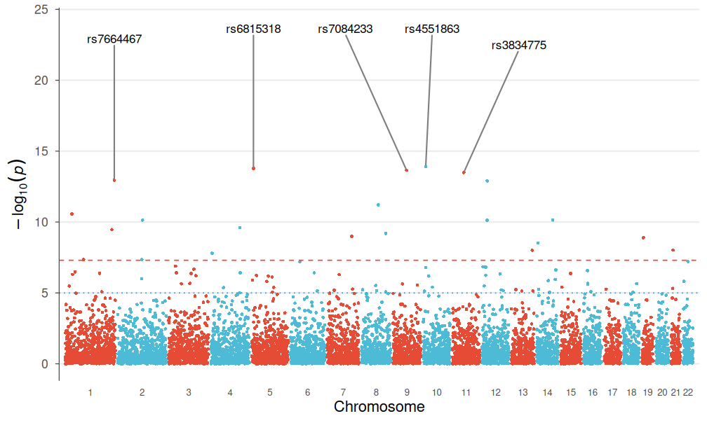
Broken y-axis for extreme p-values
When a few loci have extremely low p-values (e.g., 1e-50), they
compress the rest of the plot. y_truncate breaks the y-axis
— the region between the two values is cut out, and a break symbol (//)
marks the transition:
# Add extreme p-values for demonstration
gwas_extreme <- example_gwas
gwas_extreme$P[1:2] <- c(1e-50, 1e-30)
# Cut the region between 15 and 45 on the -log10(p) scale
manhattan_plot(gwas_extreme, y_truncate = c(15, 45), label_top_n = 3)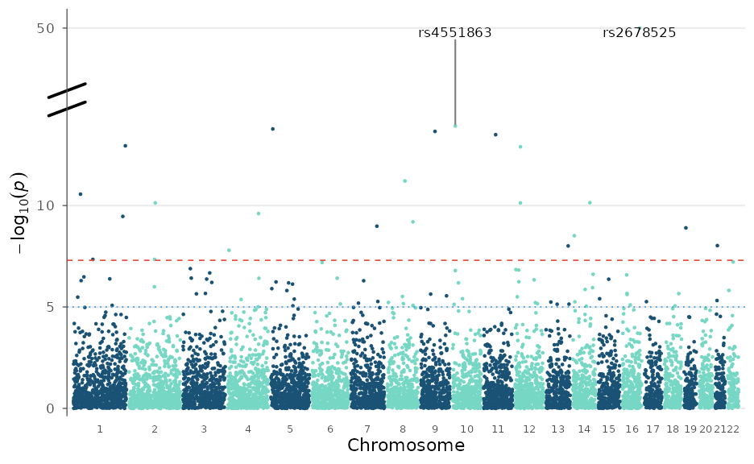
A single value auto-detects the resume point from the data:
manhattan_plot(gwas_extreme, y_truncate = 15, label_top_n = 3)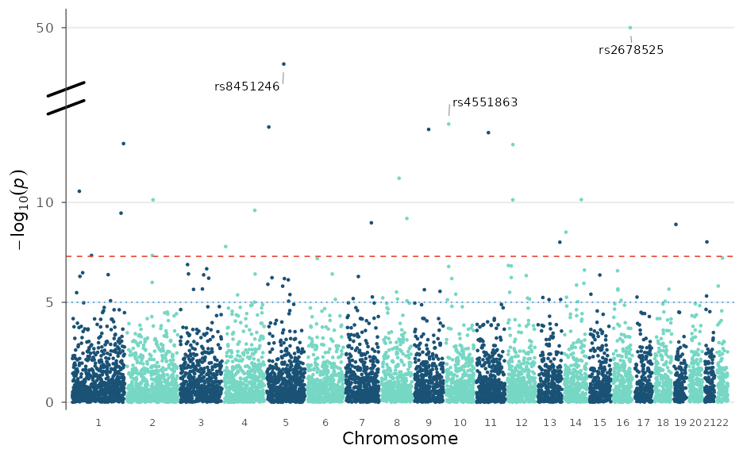
Significance thresholds
The genome-wide and suggestive significance lines are fully customizable. The default 5e-8 assumes a standard human GWAS with ~1M independent tests, but the correct threshold depends on the number of variants, correction method, and organism:
# Bonferroni for 500k SNPs
manhattan_plot(example_gwas, genome_wide = 0.05 / 500000, suggestive = 1e-4)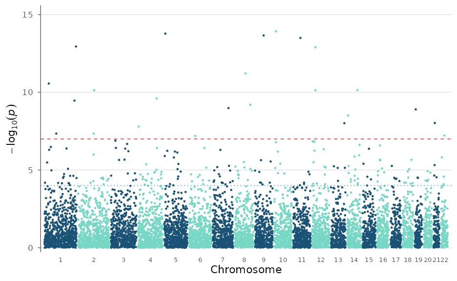
# No threshold lines
manhattan_plot(example_gwas, genome_wide = NULL, suggestive = NULL)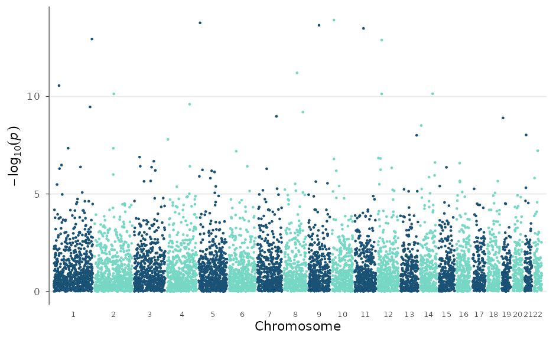
Effect-size confidence bound
For datasets with extreme p-values (e.g. biobank GWAS), small
p-values do not always imply large, robust effects.
y_metric = "beta_min" plots the lower bound of the
effect-size confidence interval: |beta| - 2*SE. Variants whose CI
overlaps zero are excluded. This highlights variants with large,
replicable effects rather than statistical artifacts from rare alleles
with perfect case/control assortment:
manhattan_plot(example_gwas, y_metric = "beta_min")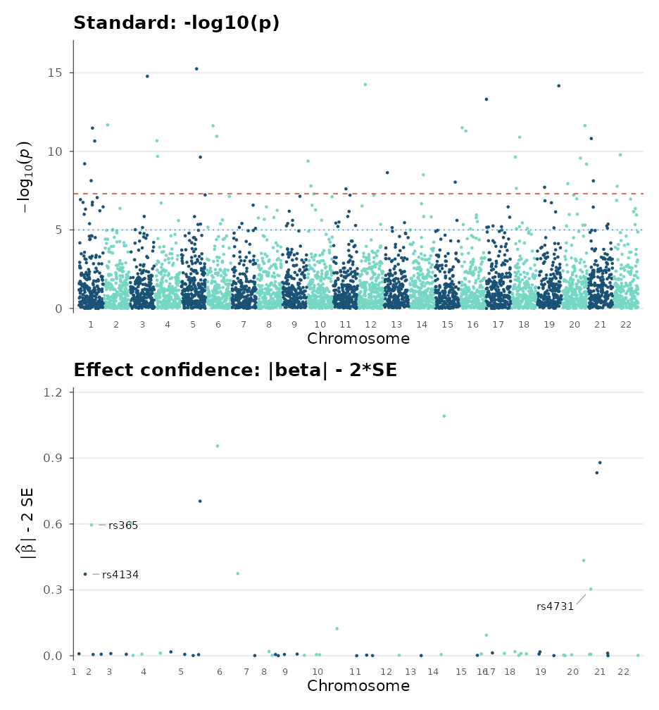
Palette and theme variations
The same Manhattan plot can look very different with alternative palettes and themes — useful when matching journal style guides:
manhattan_plot(example_gwas, colors = gwas_palette("lancet")) + theme_science()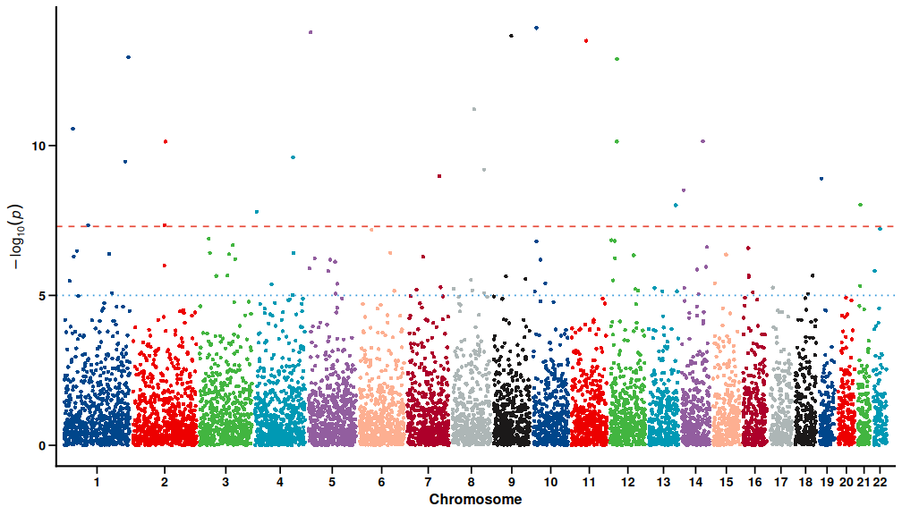
manhattan_plot(example_gwas, colors = gwas_palette("nejm")) + theme_cell()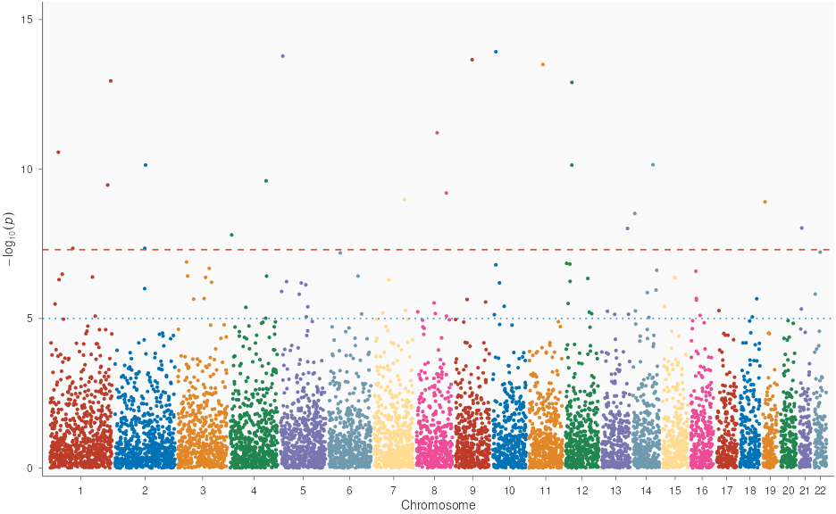
QQ plot
The quantile-quantile plot compares observed p-value distribution against the expectation under the null hypothesis.
How to interpret: Points should follow the diagonal closely in the lower left (bulk of non-associated variants) and only deviate upward in the tail (true signals). If points lift off the diagonal early and uniformly, that indicates genomic inflation — either population stratification or cryptic relatedness in your sample. The grey band is the 95% confidence interval under the null: points inside it are consistent with no association. λ_GC > 1.05 in a well-powered GWAS with polygenic signal is expected; λ_GC > 1.2 without a clear polygenic explanation warrants investigation.
qq_plot(example_gwas, show_lambda = TRUE, ci = 0.95)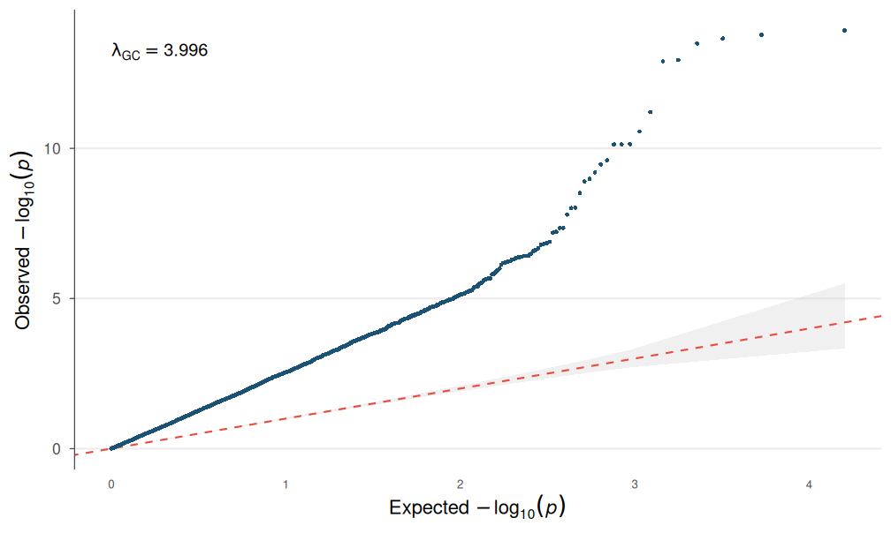
Stratifying by minor allele frequency helps diagnose whether inflation is driven by rare variants (common in imputed data) or is uniform:
example_gwas$MAF_bin <- cut(
example_gwas$AF,
breaks = c(0, 0.05, 0.2, 0.5),
labels = c("Rare (<5%)", "Low (5-20%)", "Common (>20%)")
)
qq_plot(example_gwas, group = "MAF_bin")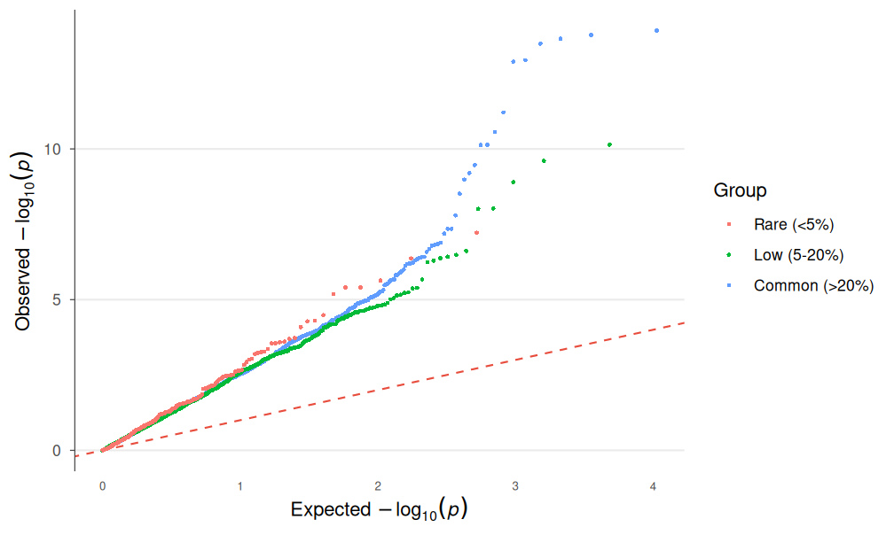
Miami plot
The Miami plot mirrors two Manhattan plots vertically — one pointing up, one pointing down. This is the standard way to compare discovery and replication cohorts, or two related traits, on a shared genomic coordinate axis.
How to interpret: Peaks at the same genomic position in both panels replicate across cohorts. Peaks present in only one panel may be cohort-specific (sample composition, ancestry differences) or underpowered in the other study. Use this for discovery/replication comparison or for two related phenotypes (e.g., BMI vs waist-hip ratio) to see shared loci:
miami_plot(
example_gwas, example_gwas,
top_title = "Discovery",
bottom_title = "Replication"
)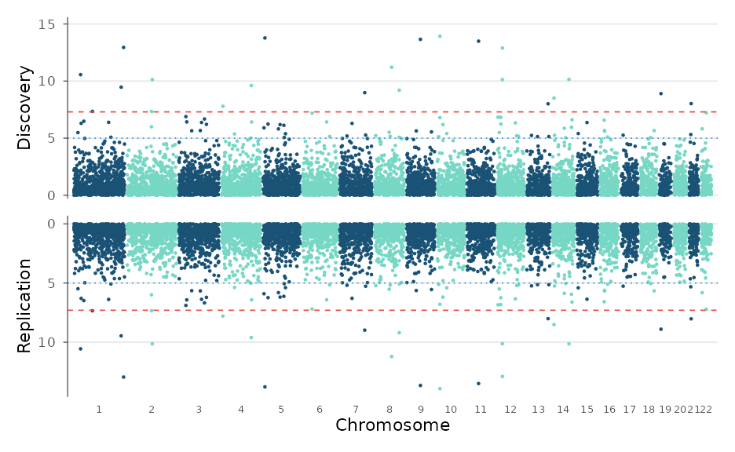
Locus zoom
Once you identify a significant region, a locus plot shows the fine structure of association within that locus.
How to interpret: The lead SNP (lowest p-value) anchors the plot. When LD data is provided, points are colored by r² with the lead — red points (high LD) that also reach significance support the same association signal, while blue points (low LD) that reach significance independently may represent a secondary signal at the locus. The gene track underneath shows which genes fall within the region, guiding biological follow-up:
locus_plot(example_gwas, region_chr = 1, region_start = 1e6, region_end = 50e6)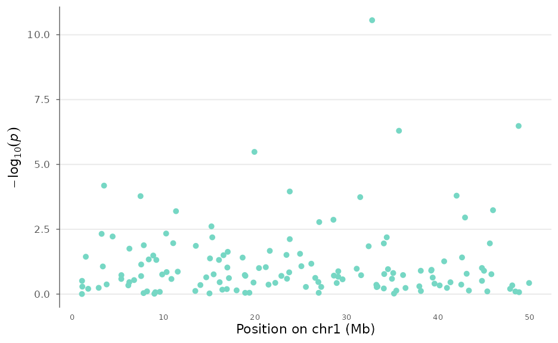
Novel visualizations
Genome-wide p-value heatmap
A compact representation of association signals across the entire genome. The x-axis is binned genomic position, the y-axis is chromosome, and color intensity reflects the strongest signal in each bin.
When to use: This works well as a supplementary overview figure — it shows genome-wide patterns that Manhattan plots can obscure through overplotting. Hot spots (bright tiles) across multiple chromosomes suggest polygenicity; a single intense cluster points to one major locus. It also handles 10M+ variant datasets without downsampling because it pre-aggregates.
pvalue_heatmap(example_gwas, bin_size = 10e6, palette = "magma")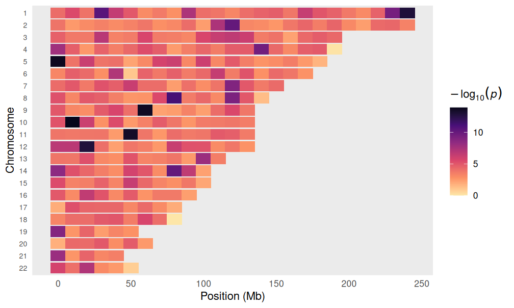
Different palettes emphasize different signal ranges:
pvalue_heatmap(example_gwas, bin_size = 10e6, palette = "viridis")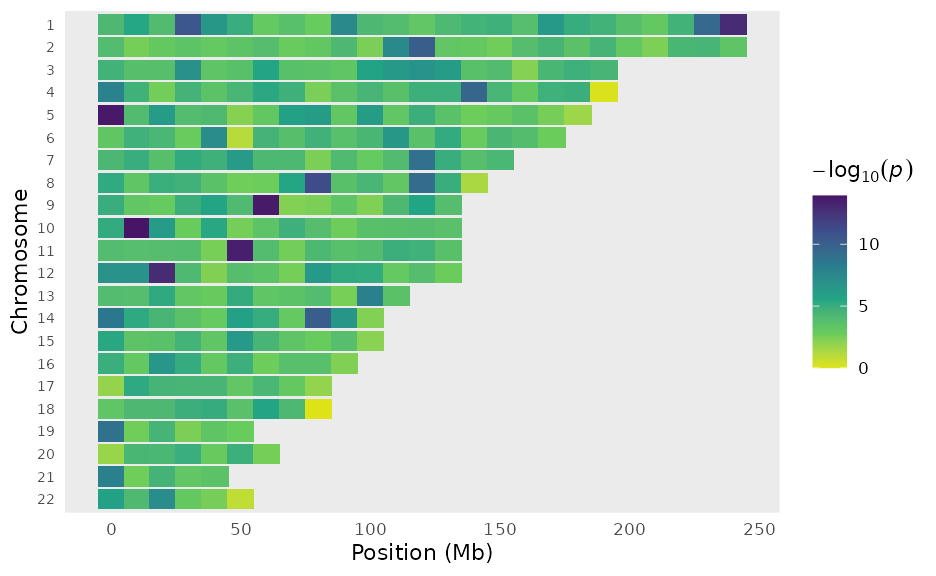
pvalue_heatmap(example_gwas, bin_size = 10e6, palette = "inferno")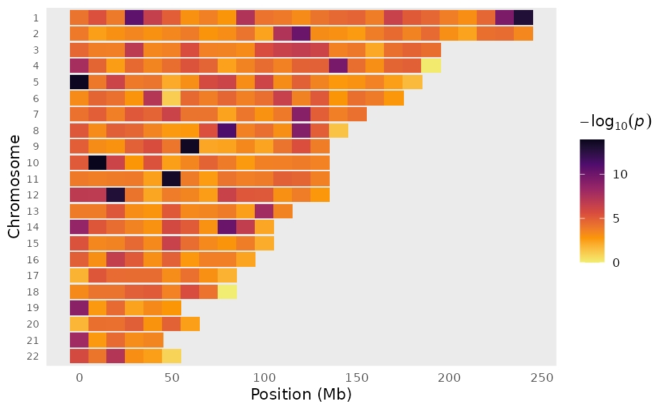
Effect-size volcano
Unlike the RNA-seq volcano plot (which uses fold change), this plots GWAS effect size () against significance. You see at once which signals are protective vs risk-increasing, and how large the effects are relative to their statistical evidence. Points can be colored by significance status or by chromosome:
volcano_plot(example_gwas, label_top_n = 5)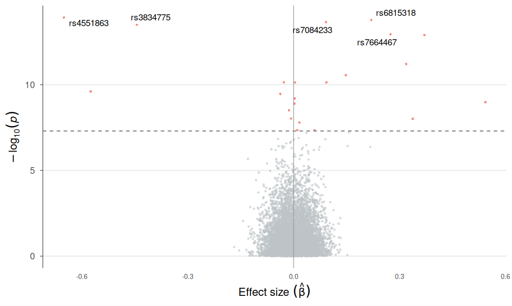
Color by chromosome instead of significance:
volcano_plot(example_gwas, label_top_n = 5, color_by = "chromosome")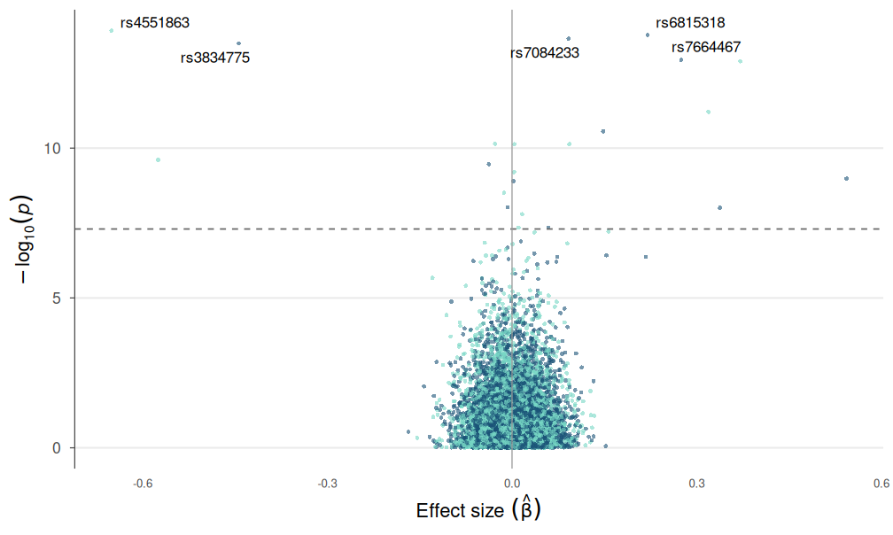
Circular Manhattan
The circular (circos-style) Manhattan arranges chromosomes around a ring. This layout is compact and works particularly well for multi-trait comparisons where each trait occupies its own ring:
circular_manhattan(example_gwas, colors = gwas_palette("nature"))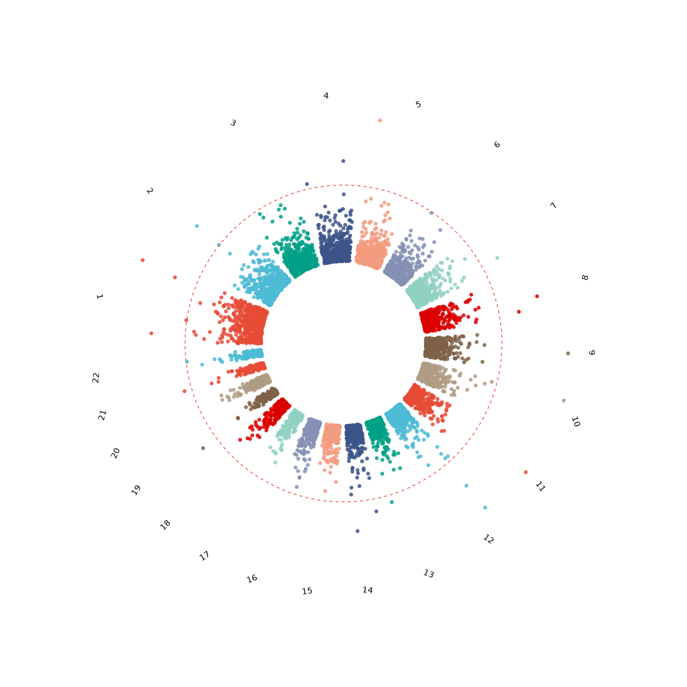
Summary dashboard
When you need a single figure that shows the full picture —
Manhattan, QQ, top hits table, and p-value distribution —
gwas_summary() assembles them into a multi-panel layout
with automatic tags (A, B, C, D) suitable for supplementary figures:
gwas_summary(example_gwas)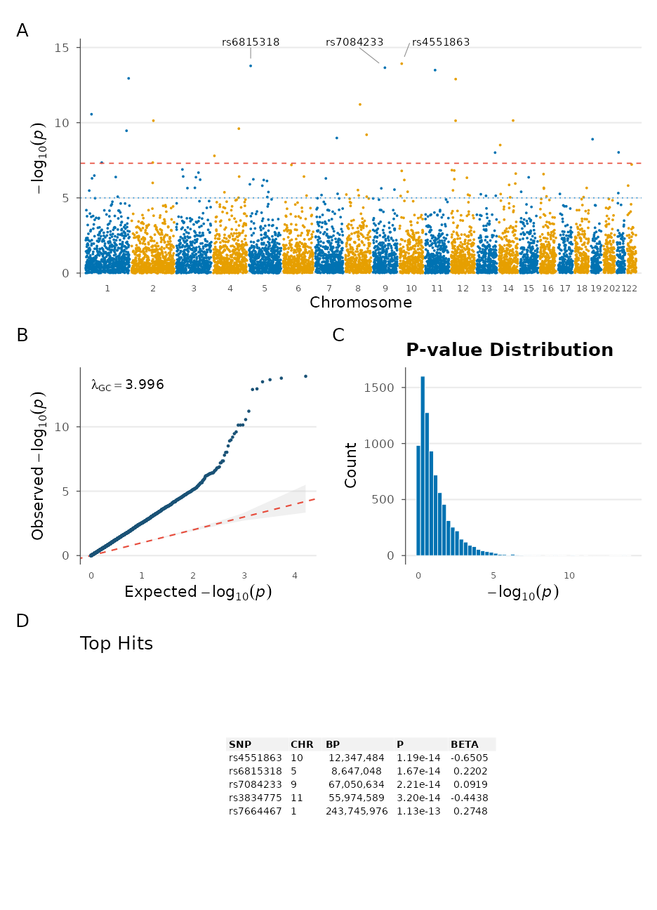
Gene annotation and top hits
Gene labels on peaks
In manuscripts, rs IDs are less informative than gene names.
manhattan_genes() takes a gene annotation table and labels
each lead SNP with its nearest gene. In practice, you would extract this
table from a GTF file or via biomaRt — here we define a
small set manually:
genes <- data.frame(
chr = c(1, 2, 5, 7, 11, 15, 19, 22),
start = c(2e6, 50e6, 80e6, 30e6, 60e6, 40e6, 10e6, 20e6),
end = c(3e6, 52e6, 85e6, 35e6, 65e6, 45e6, 15e6, 25e6),
gene = c("MTOR", "NRXN1", "TCF7L2", "CDKAL1", "KCNQ1", "FTO", "LDLR", "COMT")
)
manhattan_genes(example_gwas, genes = genes, gene_p_threshold = 0.001)
When peaks are close together, arrow-style annotations avoid label overlap:
manhattan_genes(
example_gwas, genes = genes,
gene_p_threshold = 0.001,
arrow = TRUE, label_face = "italic"
)
Top hits table
top_hits() extracts independent lead SNPs using
window-based clumping (1 Mb by default), annotates each with an
estimated cytoband, and optionally maps to the nearest gene. The result
is a plain data.frame ready for export to a manuscript table:
top_hits(example_gwas, p_threshold = 0.001, genes = genes, n = 10)
#> === Top 10 GWAS Hits ===
#>
#> SNP CHR BP P BETA nearest_gene cytoband
#> rs4551863 10 12347484 1.19e-14 -0.65050 <NA> 10p2
#> rs6815318 5 8647048 1.67e-14 0.22025 <NA> 5p1
#> rs7084233 9 67050634 2.21e-14 0.09187 <NA> 9q7
#> rs3834775 11 55974589 3.20e-14 -0.44376 <NA> 11q6
#> rs7664467 1 243745976 1.13e-13 0.27479 <NA> 1q25
#> rs5643433 12 25442148 1.27e-13 0.37069 <NA> 12p3
#> rs8682426 8 82835070 6.14e-12 0.31901 <NA> 8q9
#> rs5807931 1 32792647 2.75e-11 0.14800 <NA> 1p4
#> rs4355535 14 80736074 7.20e-11 -0.02754 <NA> 14q9
#> rs8870315 2 123129235 7.36e-11 0.09318 <NA> 2q13Region highlights
Mark specific genomic regions with a colored band — for example the MHC (chr6:25-34 Mb), known risk loci from prior GWAS, or candidate regions from linkage studies:
plt <- manhattan_plot(example_gwas)
regions <- data.frame(
chr = c(6, 1),
start = c(25e6, 5e6),
end = c(35e6, 30e6),
label = c("MHC", "1p36")
)
highlight_regions(plt, regions, color = "#FFD700", alpha = 0.2)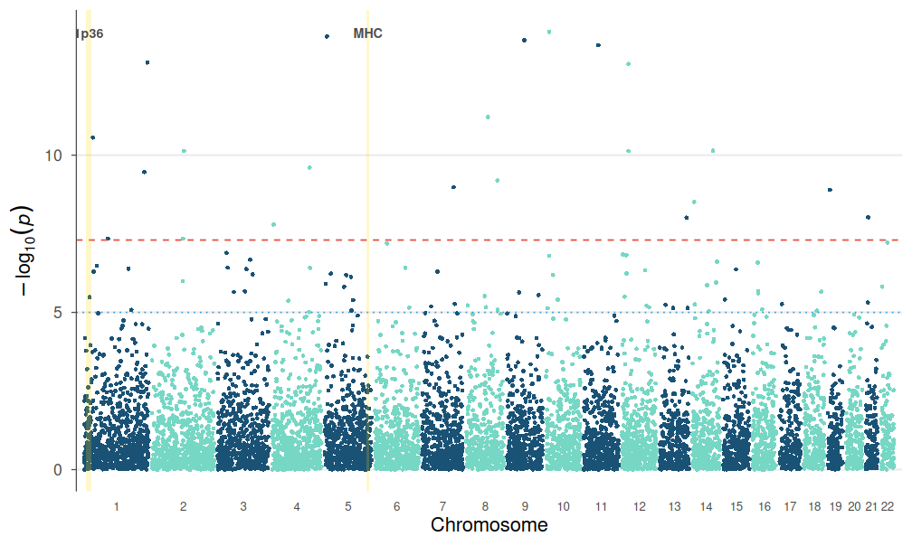
Genomic tracks
gene_track() creates a standalone gene annotation panel
that can be composed with any ggwas plot using patchwork.
Genes are rendered as directional chevrons showing strand
orientation:
genes <- data.frame(
chr = c(1, 1, 1, 1, 1),
start = c(2e6, 15e6, 40e6, 55e6, 75e6),
end = c(8e6, 25e6, 50e6, 65e6, 85e6),
gene = c("MTOR", "NRXN1", "TCF7L2", "CDKAL1", "KCNQ1"),
strand = c("+", "-", "+", "-", "+")
)
p <- locus_plot(example_gwas, region_chr = 1,
region_start = 0, region_end = 100e6, point_size = 1)
gt <- gene_track(genes, region_chr = 1, region_start = 0, region_end = 100e6,
highlight_genes = "TCF7L2")
patchwork::wrap_plots(p, gt, ncol = 1, heights = c(0.75, 0.25))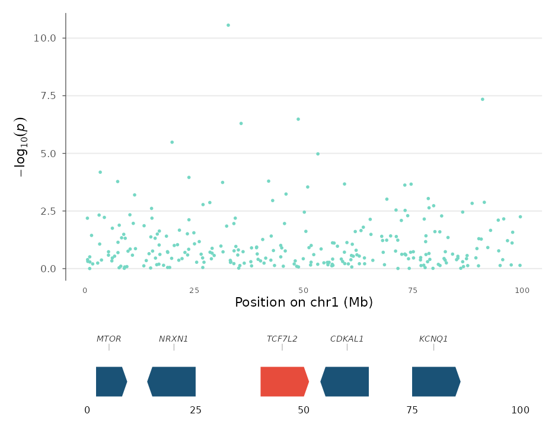
For real data, use read_gtf() to parse Ensembl or
GENCODE annotation files directly — no biomaRt needed:
genes <- read_gtf("Homo_sapiens.GRCh38.113.gtf.gz",
biotype = "protein_coding")
gene_track(genes, region_chr = 6, region_start = 25e6, region_end = 35e6)Non-human organisms
By default, ggwas uses human chromosome conventions (23 = X, 24 = Y).
For other organisms, use set_sex_chr_map():
# Mouse (20 = X, 21 = Y)
set_sex_chr_map(c(X = 20L, Y = 21L))
# Disable entirely (all chromosomes as numbers)
set_sex_chr_map(NULL)
# Restore human default
set_sex_chr_map()Multi-study comparisons
Multi-trait Manhattan
Pleiotropy — one variant influencing multiple traits — is pervasive in complex genetics. Visualizing it requires overlaying GWAS results from multiple traits on a shared genomic axis.
How to interpret: Diamond-shaped highlighted points are variants reaching genome-wide significance in more than one trait simultaneously. Peaks that appear in multiple colors at the same position suggest shared genetic mechanisms, worth following up with formal colocalization or Mendelian randomization:
set.seed(123)
trait2 <- example_gwas
trait2$P <- runif(nrow(trait2))^3
trait2$P[sample(nrow(trait2), 10)] <- 10^(-runif(10, 5, 10))
multitrait_manhattan(
BMI = example_gwas,
Height = trait2,
colors = "nature",
highlight_shared = TRUE
)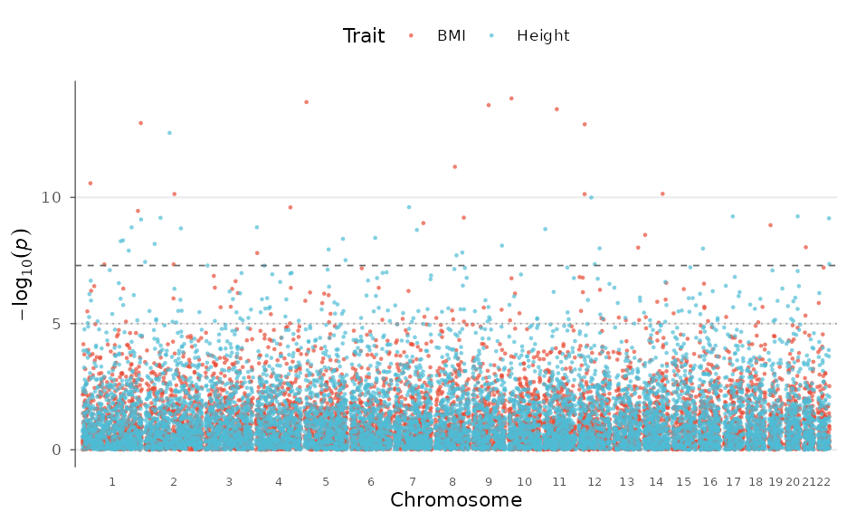
Enrichment Manhattan
Most GWAS hits fall in non-coding regions, making functional interpretation challenging. Overlaying genomic annotations (enhancers, promoters, eQTLs, open chromatin from ENCODE/Roadmap) helps determine whether signals enrich in regulatory elements relevant to the tissue of interest.
How to interpret: Colored points fall within annotated functional regions; grey background points do not. If significant peaks preferentially overlap with one annotation type (e.g., liver enhancers for lipid traits), that provides evidence for the regulatory mechanism and tissue of action:
annotations <- data.frame(
chr = c(1, 3, 5, 7, 11, 15, 19),
start = c(5e6, 20e6, 50e6, 30e6, 60e6, 40e6, 10e6),
end = c(30e6, 50e6, 120e6, 80e6, 100e6, 80e6, 40e6),
category = c("Enhancer", "Gene", "eQTL", "Gene",
"Enhancer", "eQTL", "Gene")
)
enrichment_manhattan(example_gwas, annotations = annotations, palette = "nature")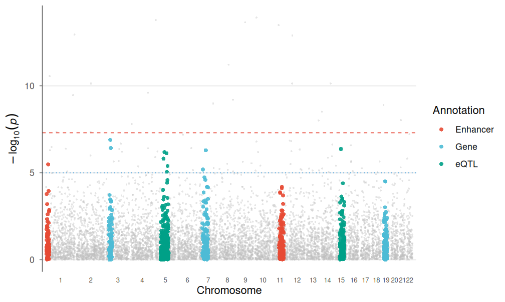
Circular Manhattan (multi-ring)
The multi-ring layout stacks traits concentrically — each ring is an independent GWAS, sharing the same angular coordinate system:
circular_manhattan(
list(BMI = example_gwas, Height = trait2),
colors = "nature", point_size = 0.6
)Post-GWAS analysis plots
PheWAS plot
Phenome-wide association studies test one variant against hundreds or thousands of phenotypes — common in biobank-era research (UK Biobank, FinnGen, All of Us).
How to interpret: Each point is a phenotype. Phenotypes are grouped by domain (metabolic, immune, cardiovascular, etc.) along the x-axis. Triangles pointing up indicate risk-increasing effects; pointing down, protective. A cluster of significant associations within one domain suggests the variant influences a biological pathway rather than a single trait. Isolated significant hits across multiple domains may indicate pleiotropy or a shared confounder (e.g., BMI-mediated effects):
phewas_data <- data.frame(
phenotype = paste0("Pheno_", 1:60),
p = 10^(-runif(60, 0, 10)),
category = rep(c("Metabolic", "Immune", "Neurological",
"Cardiovascular", "Musculoskeletal", "Other"), 10),
beta = rnorm(60, 0, 0.3)
)
phewas_plot(phewas_data, label_top_n = 5)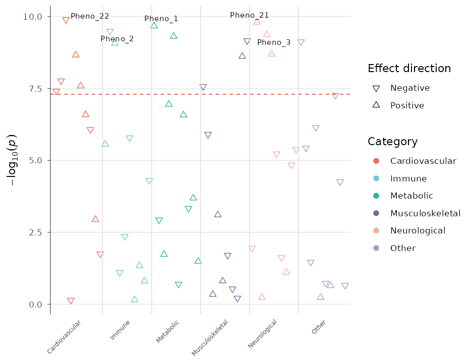
Colocalization locus plot
Colocalization analysis asks: do a GWAS signal and an eQTL (or two GWAS traits) share the same causal variant, or are they driven by different variants that happen to be nearby?
How to interpret: The two panels share a genomic coordinate axis. If the peak in the top panel (GWAS) aligns with the peak in the bottom panel (eQTL), the signals likely share a causal variant — the gene regulated by that eQTL is a strong candidate for the GWAS hit. Offset peaks suggest distinct causal variants in LD. This visual check complements formal colocalization methods (coloc, eCAVIAR):
set.seed(42)
eqtl_data <- example_gwas
eqtl_data$P <- runif(nrow(eqtl_data))^2
coloc_plot(
example_gwas, eqtl_data,
region_chr = 1, region_start = 1e6, region_end = 30e6,
top_title = "GWAS", bottom_title = "eQTL"
)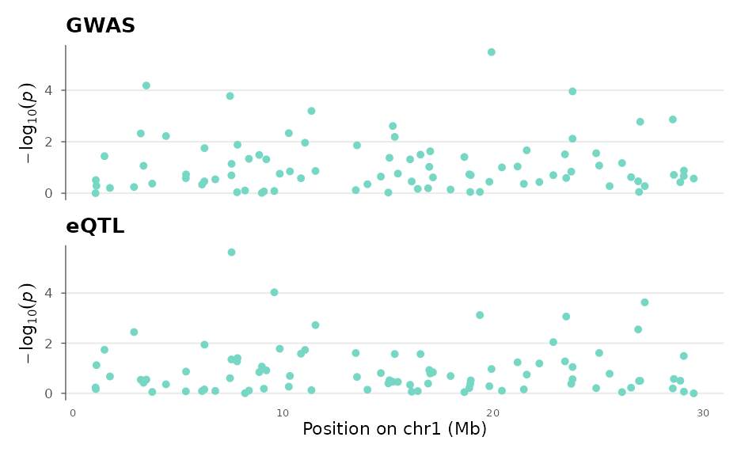
Fine-mapping credible set
After identifying a GWAS locus, fine-mapping narrows down which variant is most likely causal. Tools like SuSiE and FINEMAP assign each variant a posterior inclusion probability (PIP, 0–1) and group high-PIP variants into credible sets.
How to interpret: Large points have high PIP — they are strong causal candidates. Color indicates credible set membership: variants in the same set are in LD and cannot be statistically distinguished. A locus with one large red point (PIP > 0.8) is well-resolved; a locus with many medium-sized points in one set has residual uncertainty. Multiple credible sets at one locus suggest independent signals:
fm_data <- example_gwas
fm_data$PIP <- runif(nrow(fm_data))^5
fm_data$PIP[which.min(fm_data$P)] <- 0.92
fm_data$PIP[order(fm_data$P)[2:3]] <- c(0.65, 0.4)
fm_data$credible_set <- NA_integer_
fm_data$credible_set[fm_data$PIP > 0.05] <- 1L
finemapping_plot(
fm_data,
region_chr = 1, region_start = 1e6, region_end = 50e6,
label_pip_above = 0.3
)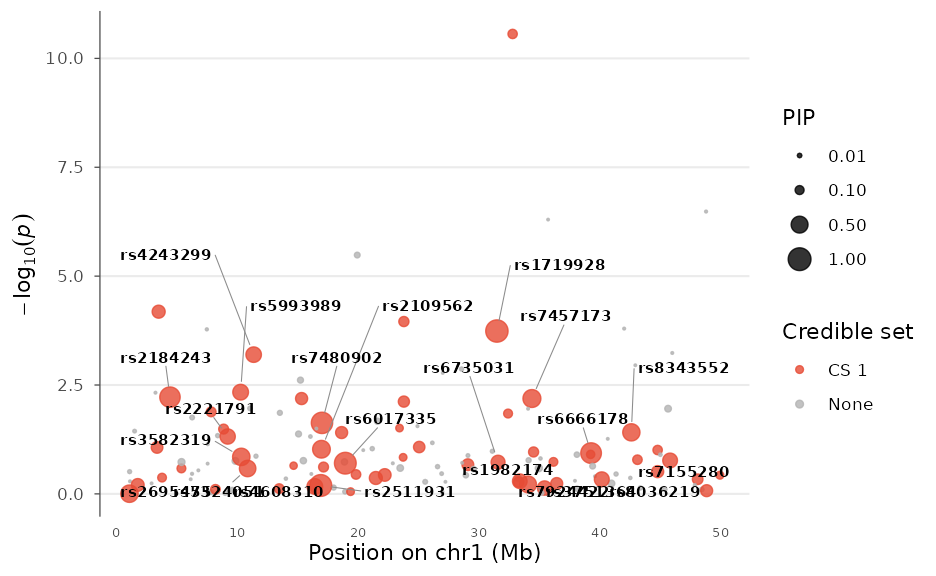
Genetic correlation matrix
Genetic correlation (rg) measures how much the genetic basis of two traits overlaps. It ranges from -1 (perfectly opposing genetic effects) through 0 (independent) to +1 (shared genetic architecture). LDSC or GREML estimate rg from GWAS summary statistics alone, without individual-level data.
How to interpret: Red cells indicate traits that share risk variants (e.g., BMI and T2D). Blue cells indicate opposing genetics (e.g., height and T2D). Clustering reveals groups of genetically related traits. Stars mark statistically significant correlations. This figure is essential for understanding trait relationships in cross-trait genomics:
traits <- c("BMI", "Height", "WHR", "T2D", "CAD", "SBP", "HDL")
set.seed(123)
rg <- matrix(0, 7, 7, dimnames = list(traits, traits))
rg[lower.tri(rg)] <- runif(21, -0.6, 0.8)
rg <- rg + t(rg)
diag(rg) <- 1
genetic_correlation(rg, show_values = TRUE, palette = "RdBu")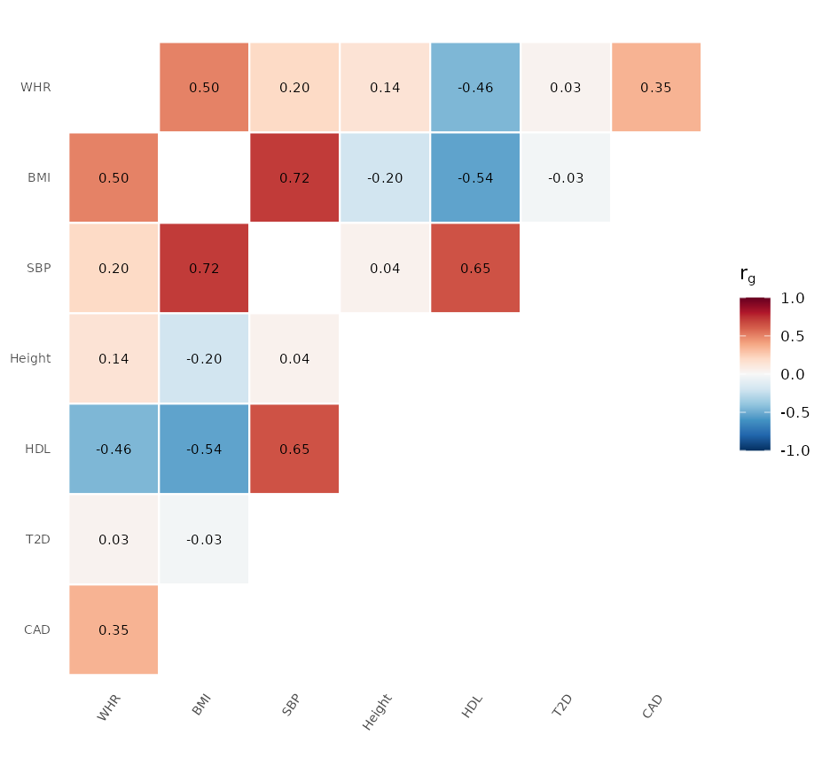
Alternative palette and without clustering:
genetic_correlation(rg, show_values = TRUE, palette = "PRGn", cluster = FALSE)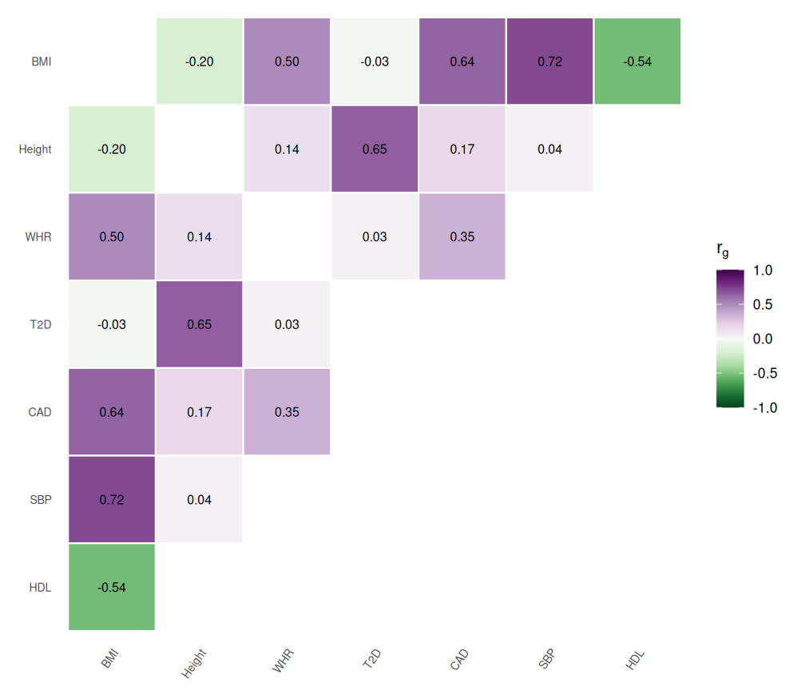
Genetic architecture
The relationship between minor allele frequency and effect size reveals a trait’s genetic architecture.
How to interpret: Most complex traits show a cloud of small effects at common frequencies (lower left) — this is polygenicity. Rare variants with large effects (upper left) are characteristic of more Mendelian-like architecture. An empty upper-right corner (large effects at common MAF) is expected because natural selection removes such variants. If you see points there, check for coding errors or population-stratification artifacts:
architecture_plot(example_gwas, p_threshold = 0.001, label_top_n = 5)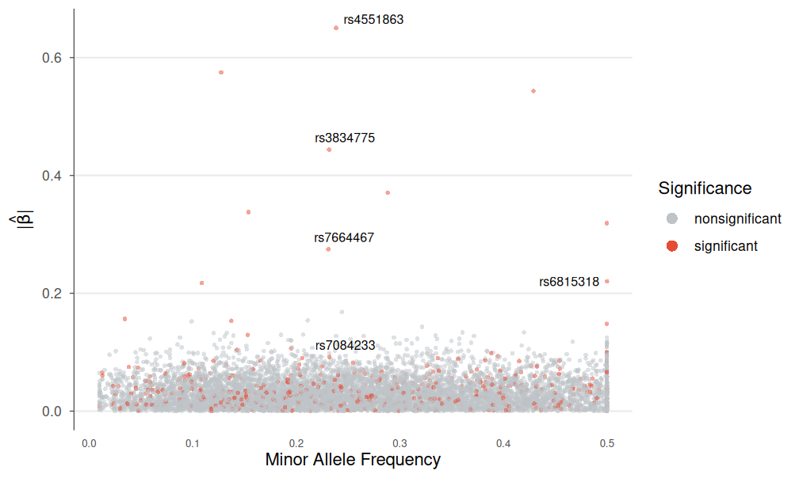
Genome-wide density
SNP density karyogram
Visualize how genotyped or imputed variants are distributed across the genome. Regions with low coverage (centromeres, heterochromatin) appear as gaps, while high-density regions stand out. Two rendering styles are available.
Heatmap style bins variants and colors tiles by count — best for large datasets:
snp_density(example_gwas, bin_size = 5e6, chr_info = chr_info_human())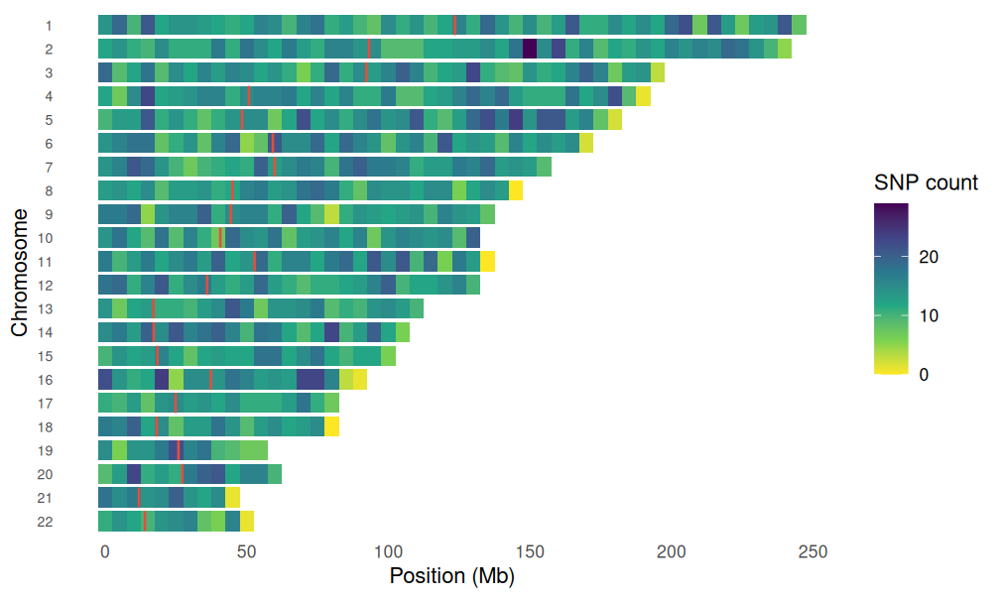
Points style draws individual variants on chromosome outlines — density is visible through natural clustering:
snp_density(example_gwas, style = "points", chr_info = chr_info_human())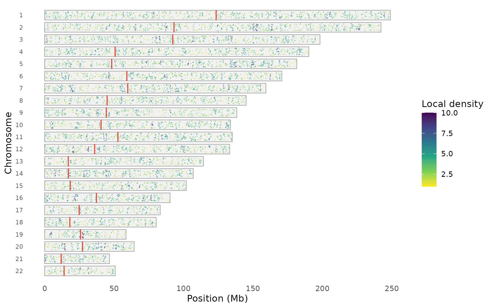
Points can be colored by local density, association significance, or uniformly:
snp_density(example_gwas, style = "points",
color_by = "significance", chr_info = chr_info_human())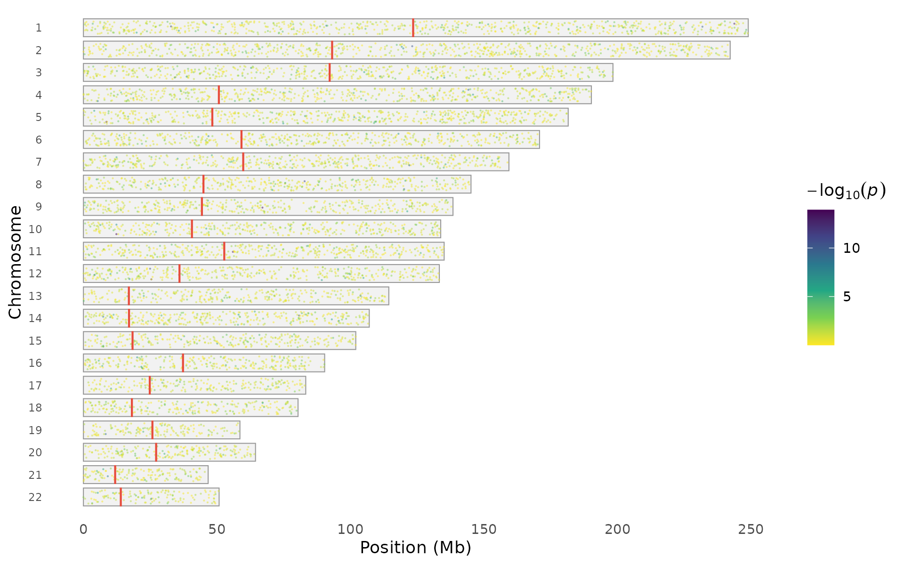
The palette argument works with both styles:
snp_density(example_gwas, bin_size = 5e6,
palette = "magma", chr_info = chr_info_human())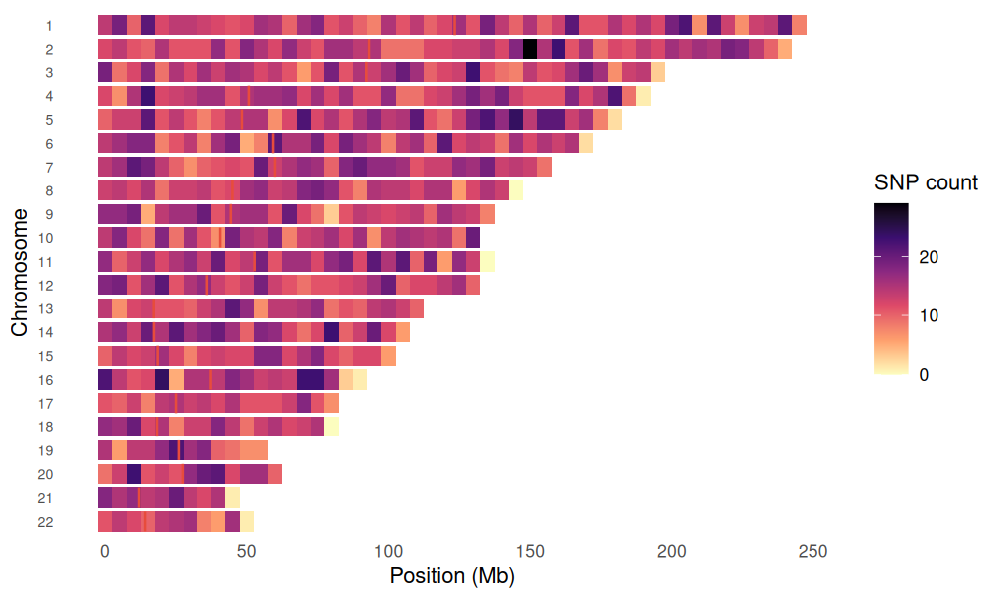
Species support
Built-in chromosome data is available for human, mouse, and cattle.
For other species, use chr_info_ucsc() to fetch data from
UCSC:
# Built-in (instant, offline)
snp_density(gwas, chr_info = chr_info_human()) # hg38
snp_density(gwas, chr_info = chr_info_mouse()) # mm39
snp_density(gwas, chr_info = chr_info_cattle()) # ARS-UCD1.2
# Any species from UCSC (requires internet)
snp_density(gwas, chr_info = chr_info_ucsc("canFam6")) # dog
snp_density(gwas, chr_info = chr_info_ucsc("susScr11")) # pigDensity vs signal comparison
A critical quality-control visualization: compare genotyping density (top track) against association signal strength (bottom track) for each chromosome. This helps distinguish genuine signals from density artifacts — if a region shows strong association AND high variant density, the signal could be driven by uneven coverage rather than biology.
density_signal_plot(example_gwas, bin_size = 5e6)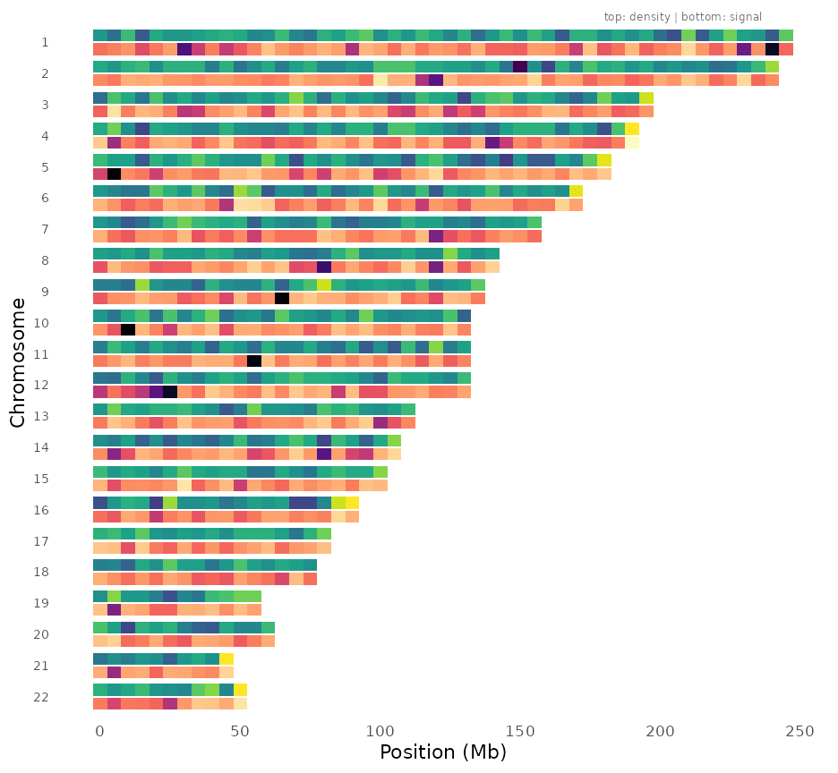
Regions where the bottom track lights up but the top track is uniform are the most convincing signals.
Themes, palettes, and presets
Color palettes
ggwas ships with 14 palettes covering different use cases — colorblind-safe defaults, journal-inspired schemes, and RColorBrewer integrations:
gwas_palettes()
#> [1] "default" "colorblind" "vibrant" "pastel"
#> [5] "dark" "nature" "science" "lancet"
#> [9] "nejm" "aaas" "brewer_set1" "brewer_set2"
#> [13] "brewer_paired" "brewer_dark2"
gwas_palette("nature", n = 5)
#> [1] "#E64B35" "#4DBBD5" "#00A087" "#3C5488" "#F39B7F"Any palette can be passed directly to plot functions via the
colors argument. Use gwas_palette(name, n = k)
to interpolate when you need a specific number of colors (e.g., for
multi-trait plots).
Journal themes
Each journal has its own style requirements for figure fonts, sizes, and axis formatting. Built-in themes handle this so you don’t need to manually adjust parameters for each submission:
manhattan_plot(example_gwas, label_top_n = 3) + theme_nature()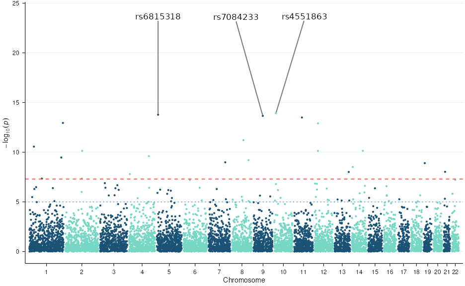
Available themes: theme_nature(),
theme_science(), theme_cell(),
theme_plos(), theme_presentation(),
theme_poster().
Presets
A preset bundles together a theme, color palette, and appropriate point sizes for a given context. This is the fastest way to switch between exploratory analysis and publication-ready output:
p <- gwas_preset("publication")
manhattan_plot(example_gwas, colors = p$colors, point_size = p$point_size) + p$theme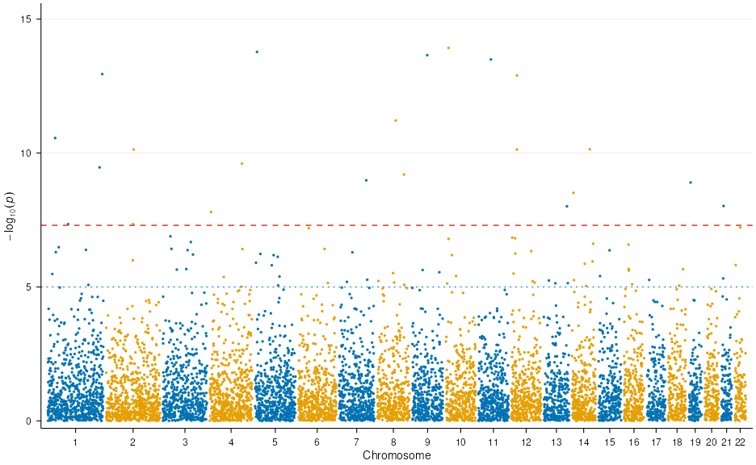
Available presets: "publication",
"presentation", "poster",
"exploratory".
Performance
For large datasets (common in imputed GWAS with 10-40M variants), ggwas applies smart downsampling by default. The algorithm preserves all significant and near-significant variants while spatially binning the dense cloud of non-significant points. The resulting plot is visually indistinguishable from plotting all points, but renders in seconds rather than minutes:
manhattan_plot(large_gwas) # auto (target: 200k points)
manhattan_plot(large_gwas, downsample = FALSE) # all points (slow)
manhattan_plot(large_gwas, downsample_n = 500000) # custom targetMulti-panel figures
Since every ggwas function returns a standard ggplot object, you can
compose multi-panel figures using patchwork the same way
you would with any other ggplot:
library(patchwork)
p1 <- manhattan_plot(example_gwas, label_top_n = 3) +
labs(tag = "A") + theme_nature()
p2 <- qq_plot(example_gwas) +
labs(tag = "B") + theme_nature()
p3 <- volcano_plot(example_gwas, label_top_n = 5) +
labs(tag = "C") + theme_nature()
p1 / (p2 | p3) + plot_layout(heights = c(2, 1))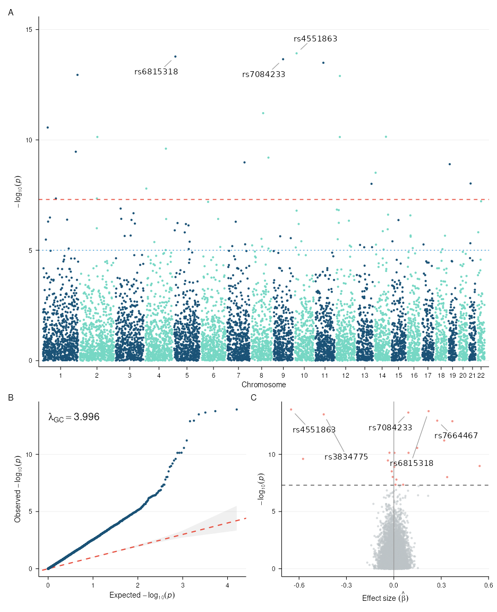
Saving figures
Standard ggplot2 export with dimensions matching journal requirements:
fig <- manhattan_plot(example_gwas, label_top_n = 5) + theme_nature()
# Nature — single column (89 mm width)
ggsave("figure1.pdf", fig, width = 89, height = 55, units = "mm")
# Full-width figure (183 mm)
ggsave("figure1_wide.pdf", fig, width = 183, height = 80, units = "mm")
# High-res PNG for presentations
ggsave("figure1.png", fig, width = 10, height = 5, dpi = 300)Session info
sessionInfo()
#> R version 4.6.1 (2026-06-24)
#> Platform: x86_64-pc-linux-gnu
#> Running under: Ubuntu 24.04.4 LTS
#>
#> Matrix products: default
#> BLAS: /usr/lib/x86_64-linux-gnu/openblas-pthread/libblas.so.3
#> LAPACK: /usr/lib/x86_64-linux-gnu/openblas-pthread/libopenblasp-r0.3.26.so; LAPACK version 3.12.0
#>
#> locale:
#> [1] LC_CTYPE=C.UTF-8 LC_NUMERIC=C LC_TIME=C.UTF-8
#> [4] LC_COLLATE=C.UTF-8 LC_MONETARY=C.UTF-8 LC_MESSAGES=C.UTF-8
#> [7] LC_PAPER=C.UTF-8 LC_NAME=C LC_ADDRESS=C
#> [10] LC_TELEPHONE=C LC_MEASUREMENT=C.UTF-8 LC_IDENTIFICATION=C
#>
#> time zone: UTC
#> tzcode source: system (glibc)
#>
#> attached base packages:
#> [1] stats graphics grDevices utils datasets methods base
#>
#> other attached packages:
#> [1] patchwork_1.3.2 ggplot2_4.0.3 ggwas_0.99.2 BiocStyle_2.40.0
#>
#> loaded via a namespace (and not attached):
#> [1] gtable_0.3.6 jsonlite_2.0.0 compiler_4.6.1
#> [4] BiocManager_1.30.27 Rcpp_1.1.1-1.1 gridExtra_2.3.1
#> [7] jquerylib_0.1.4 systemfonts_1.3.2 scales_1.4.0
#> [10] textshaping_1.0.5 yaml_2.3.12 fastmap_1.2.0
#> [13] R6_2.6.1 labeling_0.4.3 knitr_1.51
#> [16] ggrepel_0.9.8 bookdown_0.47 desc_1.4.3
#> [19] bslib_0.11.0 RColorBrewer_1.1-3 rlang_1.2.0
#> [22] cachem_1.1.0 xfun_0.59 fs_2.1.0
#> [25] sass_0.4.10 S7_0.2.2 otel_0.2.0
#> [28] viridisLite_0.4.3 cli_3.6.6 pkgdown_2.2.0
#> [31] withr_3.0.3 digest_0.6.39 grid_4.6.1
#> [34] lifecycle_1.0.5 vctrs_0.7.3 evaluate_1.0.5
#> [37] glue_1.8.1 data.table_1.18.4 farver_2.1.2
#> [40] ragg_1.5.2 rmarkdown_2.31 tools_4.6.1
#> [43] htmltools_0.5.9